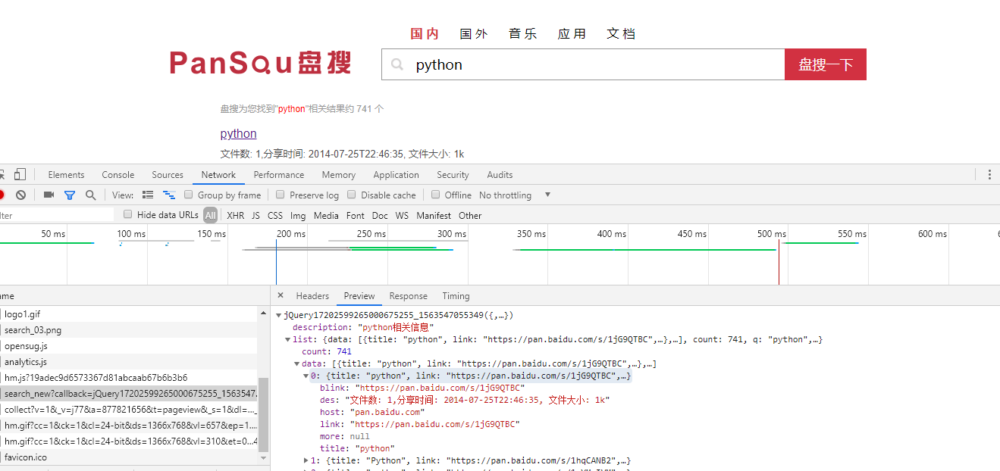

因为盘搜搜索出来的链接有很多已经失效了，影响找数据的效率，因此想到了用爬虫来过滤出有效的链接，顺便练练手~
这是本次爬取的目标网址http://www.pansou.com，首先先搜索个python，之后打开开发者工具，
可以发现这个链接下的json数据就是我们要爬取的数据了，把多余的参数去掉，
剩下的链接格式为http://106.15.195.249:8011/search_new?q=python&p=1，q为搜索内容，p为页码

以下是代码实现：
import requests
import json
from multiprocessing.dummy import Pool as ThreadPool
from multiprocessing import Queue
import sys
headers = {
"User-Agent": "Mozilla/5.0 (Windows NT 10.0; Win64; x64) AppleWebKit/537.36 (KHTML, like Gecko) Chrome/75.0.3770.100 Safari/537.36"
}
q1 = Queue()
q2 = Queue()
urls = [] # 存取url列表
# 读取url
def get_urls(query):
# 遍历50页
for i in range(1,51):
# 要爬取的url列表，返回值是json数据，q参数是搜索内容，p参数是页码
url = "http://106.15.195.249:8011/search_new?&q=%s&p=%d" % (query,i)
urls.append(url)
# 获取数据
def get_data(url):
print("开始加载，请等待...")
# 获取json数据并把json数据转换为字典
resp = requests.get(url, headers=headers).content.decode("utf-8")
resp = json.loads(resp)
# 如果搜素数据为空就抛出异常停止程序
if resp['list']['data'] == []:
raise Exception
# 遍历每一页数据的长度
for num in range(len(resp['list']['data'])):
# 获取百度云链接
link = resp['list']['data'][num]['link']
# 获取标题
title = resp['list']['data'][num]['title']
# 访问百度云链接，判断如果页面源代码中有“失效时间：”这段话的话就表明链接有效，链接无效的页面是没有这段话的
link_content = requests.get(link, headers=headers).content.decode("utf-8")
if "失效时间：" in link_content:
# 把标题放进队列1
q1.put(title)
# 把链接放进队列2
q2.put(link)
# 写入csv文件
with open("wangpanziyuan.csv", "a+", encoding="utf-8") as file:
file.write(q1.get()+","+q2.get() + "\n")
print("ok")
if __name__ == '__main__':
# 括号内填写搜索内容
get_urls("python")
# 创建线程池
pool = ThreadPool(3)
try:
results = pool.map(get_data, urls)
except Exception as e:
print(e)
pool.close()
pool.join()
print("退出")